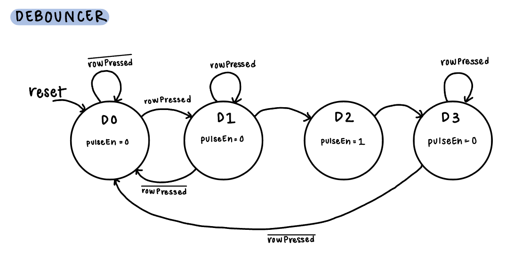
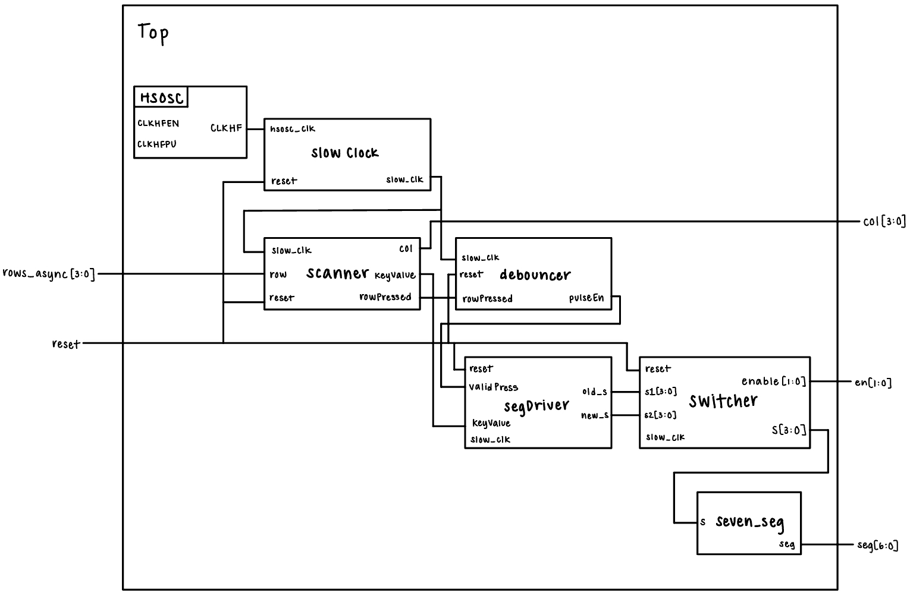

Lab 3: Keypad Scanner
Introduction
In this lab, we learned how to use the FPGA to scan inputs from a 4x4 keypad. The multiplexed display from lab 2 was combined with a keypad to display user inputs. A scanning system was designed to read the inputs from keypad scanner, and a method for switch debouncing was also implemented. This lab required carefuly, thought-outTsynchronous sequential design
Design and Testing
One of the biggest design considerations was the scanner FSM. I went through many iterations, but in order to meet all of the specifications of the lab, ended up going with the following design:

As shown in figure 1, the scanner FSM has one state for each column, and one for each row within each column. Given a row input, the FSM should transition from the column state to the state corresponding to the row input. If no rows are pressed, you transition to the next column and repeat the process. My FSM was originally simpler, but in order to account for edge cases in button pressing, I decided to make each row a distinct state.
The next big design consideration was debouncer FSM. One important consideration when working with the keypad matrix is switch bouncing. When a button is pressed, the input may take some time to settle. In order to not register the “bouncing” as multiple presses, a method for switch debouncing has to be implemented. I did this using another FSM, which interacts with my scanner FSM and the rest of my modules.

As shown in figure 2, the debouncer module has four states. The first state is idle, and as soon as a row press is detected, you transition to the second state, which is where debouncing happens. I implemented the debouncing using a counter. I chose an arbitrary debounce time of 50 ms, as I believed the key would stabilitize after that time. Since the debouncer operates on the slow clock (at 183 Hz), I determined the number of cycles the counter needed to iterate by multiplying the clock frequency by the debouncing time, which gave me a number of ~10. Therefore, as soon as the counter reaches 10, you transition to the next stage, in which a pulse is sent out. You turn the pulse off in the final stage, and go back to the idle state. This pulse allows for regulation of decoding, maintaining it to only happen after the debouncing is complete.
After designing the FSMs and all the interacting modules (explained in block diagram section below), I wired up the keypad. Seeing as our design was active high, I used pull down resistors for the rows. The picture of the wired circuit is shown below in figure 3.

In order to test the system, I wrote some test benches for the more crucial modules and tested the keypad physically for all edge cases.
Technical Documentation
The source code for the project can be found in the associated Github repository.
Block Diagram
The block diagram for my system is shown below in figure 4.

The high speed oscillator lives in the top level module, and a slowClock module after it divides the high speed 48MHz clock into a slower 183Hz clock, which is used by the rest of the system. Following this, a scanner module takes in the row input and powers the column. It also sends out the 8-bit keyValue, which contains information about the row and column pressed. This module also outputs whether or not a row is pressed, which is used by the debouncer to debounce the press. The debouncer module outputs a pulse once debouncing is complete. Once the segDriver module receives a pulse, it takes the keyValue and decodes it into a four bit input. This module also shifts the old digit to the left, and puts the new digit on the right. These are sent to the switcher, which sends power to the seven segment (using enables) at the same frequency. The seven segment module then dipays the numbers.
Schematic
The schematic for the system is shown below in figure 5. It includes the FPGA, the dual seven segment, and the keypad.

Results and Discussion
The design meets all of the proficiency specs. It registers key presses, and moves old key presses to the left and puts new key presses on the right. All the LEDs are equally bright. The design also doesn’t lock up when multiple keys are pressed.
Throughout the lab, there were multiple bugs I resolved. I spent a long time finalizing the design of the FSMs and figuring out how to implement the debouncing logic. After quickly writing up the System Verilog, I uploaded my code and noticed that there were two 0s being displayed but no presses were being registered. This was the biggest bug, and was solved with a lot of simulation, checking the code to decode keyValue, and dealing with clock issues.
I originally had a smaller FSM, but changed it to account for every row case so that when one key is pressed, and a second is also pressed in the same column at the same time, when you let go of the original key, the second key registers. I still have some issues that I am debugging. For example, for the two rightmost columns, when I press one key and press another, it registers the press even though the other is held down. This only happens for the two rightmost columns. I also was not able to implement a synchronizer successfully.
Conclusion
Despite the small issues discussed above, my FPGA design was successfully able to scan inputs from a 4x4 keypad and debounce all the keys.